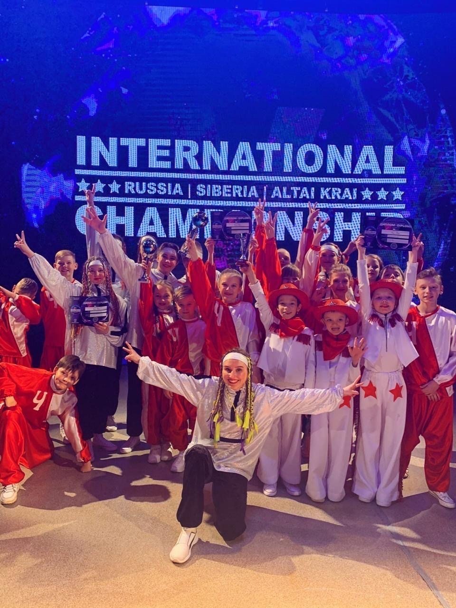

|  |
Легендарная Dance-группа «Час-Пик». Усилие, труд и любовь у брейк-дансу сделали своё дело,
поэтому в далеком 1992 году коллектив быстро
набрал популярность и завоевал любовь зрителя. Сегодня группа представляет несколько
современных направлений, таких как HIP-HOP, SHUFFLE и BREAK
DANCE.
«Танец - это ритм моей жизни. Каждый день, приходя на работу уже в родной Городской Дворец
культуры,
я рад видеть, как горят глаза детей во время танца!
У нас очень дружный коллектив, приятно, что дети общаются между собой даже вне занятий».
Усердный труд ребят не заставляет себя ждать. В нашей копилке множество наград, которыми мы
гордимся.
Мы стараемся дать как можно больше знаний своим воспитанникам, ведь многие из них планируют
связать
жизнь с профессией хореографа.
А сколько выпускников у «Час-Пика»!
И глядя на счастливых и заинтересованных танцами детей, сердце радуется!
Будем продолжать радовать бийчан и гостей города своими выступлениями!
|